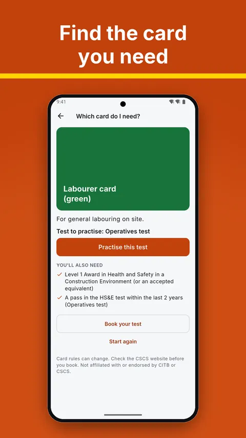

Not a government app. HiVis is an independent study app made by Kodfu Bilisim. It is not affiliated with or endorsed by CITB, CSCS, Pearson VUE or HSE, and it does not contain the real test questions.
Free practice › General safety
Electrical safety: free HS&E test practice questions
Site voltages, RCDs, checking tools and leads, power lines and electric shock.
6 original questions from the HiVis app for the CITB HS&E Operatives test, each with the answer and an explanation. No sign-up, nothing saved. These are not the real test questions: no app or website can show you those.
Question 1 · Choose one answer
What voltage should portable power tools normally use on a construction site?
- 230 volts
- 110 volts
- 400 volts
- 12 volts
Show the answer
Answer B: 110 volts
The standard site voltage for portable mains tools is 110 volts from a centre-tapped-earth transformer. Battery tools are safer still.
Source: HSE HSG141 Electrical safety on construction sites
Question 2 · Choose one answer
How do you check that a portable RCD is working?
- Plug in a tool and then touch its casing
- Look for a green light on the plug top
- Wait to see whether it trips during the day
- Press its test button, as the instructions say
Show the answer
Answer D: Press its test button, as the instructions say
Pressing the test button checks the tripping mechanism. Do this regularly, following the instructions; if it does not trip, do not use it and report it.
Source: HSE guidance on RCDs
Question 3 · Choose one answer
You are helping on a delivery and notice the lorry driver is about to raise the tipper body directly under an overhead power line.
What should you do?
- Signal the driver to stop and warn them about the line
- Let them carry on, as the line looks high enough
- Stand next to the lorry to guide the body past the line
- Report it to the supervisor once the load is tipped
Show the answer
Answer A: Signal the driver to stop and warn them about the line
A raised tipper body can touch or come close enough for electricity to jump. Stop the driver at once and warn them, then tell your supervisor.
Source: HSE GS6 Avoiding danger from overhead power lines
Question 4 · Choose one answer
A workmate has collapsed and is still holding a power tool that is plugged in and humming.
What should you do first?
- Pull them away from the tool by their arm
- Switch off the power at the plug or isolator
- Throw water over them to cool any burns
- Start CPR straight away while they hold the tool
Show the answer
Answer B: Switch off the power at the plug or isolator
Touching someone who is still in contact with the supply could electrocute you too. Switch off first, then call 999 and give first aid if trained.
Source: HSE and first aid guidance on electric shock
Question 5 · Choose one answer
On site, a tool runs on 230 volts with a blue plug. What extra protection should it have?
- A 30 mA residual current device
- A larger fuse in the plug top
- An extension lead of at least 25 m
- A yellow plug fitted on the end
Show the answer
Answer A: A 30 mA residual current device
At 230 volts a shock to earth is far more likely to kill than on a 110 V centre-tapped system. A 30 mA RCD cuts the supply fast enough to make a fatal shock much less likely.
Source: HSE HSG141 Electrical safety on construction sites
Question 6 · Choose one answer
Why can an overhead power line kill you even if you do not touch it?
- Electricity can jump across a gap to you
- Lines give off fumes that cause collapse
- Lines pull metal objects towards them
- The cables can sag and wrap around you
Show the answer
Answer A: Electricity can jump across a gap to you
High-voltage electricity can arc through the air to a raised tipper, jib or ladder that comes close. That is why plant and long objects must stay well clear and every line is treated as live.
Source: HSE GS6 Avoiding danger from overhead power lines
You’ve seen 6 of 20 questions in this topic
The HiVis app has all 20, each with an explanation. Across the whole Operatives there are 389 questions in 19 topics, plus timed 50-question mock tests of 45 minutes.
3 of them are free in the app, the rest come with Pro. HiVis Pro is £5.99 one-off: every question and every mock test for all test levels. No subscription.
Android now; iPhone version not yet available.
Revision notes
Site voltages and plug colours
Portable tools on construction sites should run on 110 volts from a centre-tapped-earth transformer. These use yellow plugs and cables, and the most anyone can receive to earth is about 55 volts, which is much less likely to kill. Blue plugs mean 230 volts and need extra protection from a residual current device. Red plugs mean 400 volts, used for large equipment. Battery-powered tools remove the supply cable altogether and are the safest choice.
Residual current devices
A residual current device (RCD) switches the power off very quickly if current leaks to earth, for example through a person. Site RCDs are usually rated at 30 milliamps. Press the test button regularly, as the device instructions say, to check it trips. An RCD reduces the chance of a fatal shock, but it does not stop all shocks and is not a substitute for checking tools and leads.
Checking tools and leads
Look over every tool, lead and plug before you use it. Check for cut or crushed cables, cracked plugs or casings, scorch marks, loose screws and coloured wires showing where the cable enters the plug. If you find a fault, do not use it: label it, take it out of use and report it. Never repair cables with insulating tape. Fully unwind cable reels before use, as a coiled cable can overheat.
Overhead power lines
Overhead lines can kill without being touched, because electricity can jump across a gap. Always treat them as live. Keep plant, tipper bodies, ladders, scaffold tubes and long materials well away. Sites use barriers, goalposts and height warnings to keep people and machines clear. If a machine touches a line, the driver should stay in the cab, warn others to keep away and get the supply switched off.
Electric shock
If someone is receiving a shock, do not touch them while they are still in contact with the supply, or you may become a second casualty. Switch off at the plug, switch or isolator first. If you cannot, push them clear using something dry that does not conduct, such as a wooden broom handle. Then call 999 and give first aid if you are trained. Shocks can cause burns, stop the heart or cause falls.
Leave electrical work to competent people
Only competent, authorised people may install or work on site electrical systems. Before electrical work, the circuit is isolated and locked off with a personal padlock and warning tag, so nobody can switch it back on. Never remove someone else's lock or tag. Do not overload sockets or plug adaptors into each other, and route cables where they will not be crushed, cut or tripped over.
More topics
- Previous: FireThe fire triangle, extinguisher types, hot work controls and fire emergencies on site.
- Next: Tools and equipmentUsing hand and power tools safely: guards, checks, training, abrasive wheels and cartridge tools.
- HS&E test guideFormat, pass mark, booking, ID and how to prepare
Practise every test in the HiVis app
841 original questions for the Operatives, Supervisory, Managers and Professionals and specialist HS&E tests, full timed mock tests of 50 questions in 45 minutes, simple explanations with read aloud, a study plan and spaced review. It works offline, with no ads and no account.



Free: three topics in full, three questions in every other topic, one full mock test for each test, the Card Finder and Site words.
HiVis Pro, £5.99 one-off: every question and every mock test for all test levels. No subscription.
Android now; iPhone version not yet available. HiVis helps you prepare; it cannot promise a pass.